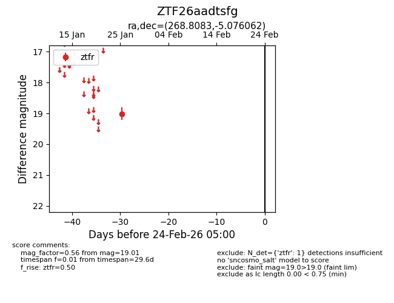
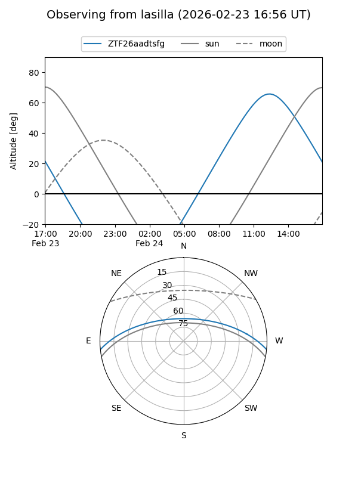
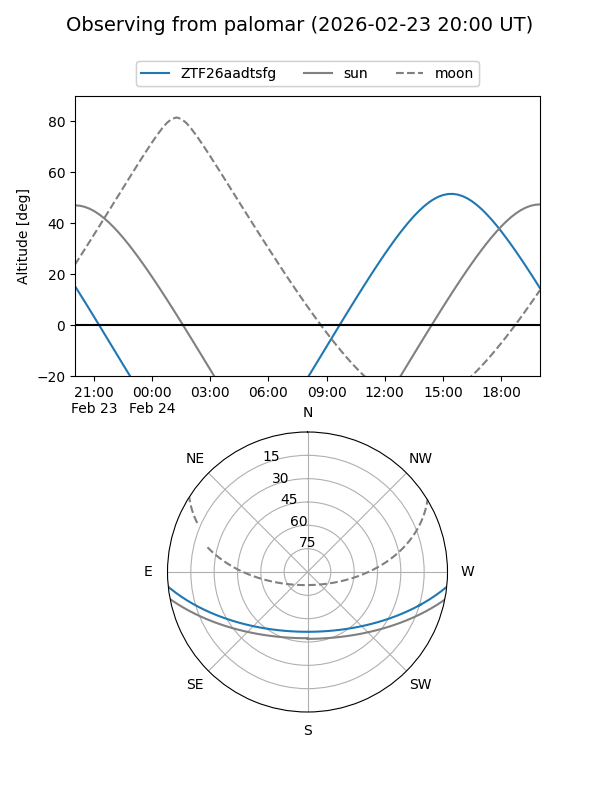

ZTF26aadtsfg
Target ZTF26aadtsfg at 2026-01-27 14:16
Aliases and brokers:
FINK: link
Lasair: link
ALeRCE: link
alt names
ZTF26aadtsfg (ztf,fink_ztf)
Coordinates:
equatorial (ra, dec) = 268.8083,-5.07606
equatorial (HMS+DMS) = 17:55:13.99,-05:04:33.82
galactic (l, b) = (21.8638,+10.07207)
Flags:
Photometry:
last ztfr=19.01
1 ztfr detections
Lightcurve

Visibility


Additional plots